8.7 Mehr über Unentscheidbarkeit: Das Postsche Korrespondenzproblem
Die Unentscheidbarkeit des Halteproblems mag auf den ersten Blick
esoterisch anmuten. Es taucht ja nur auf, weil die Problemstellung
irgendwie selbstreferenziell ist. Das täuscht: Unentscheidbarkeit
taucht in vielen Bereichen der theoretischen Informatik und der
Mathematik auf, auch bei Fragestellungen, die auf den ersten Blick
nichts mit Turingmaschinen zu tun haben und völlig harmlos wirken.
Wie zum Beispiel das rein kombinatorische
Postsche
Korrespondenzproblem.
Im Postschen Korrespondenzproblem haben wir
endlich viele Kärtchen (auch
Kacheln
genannt) gegeben, die oben
und unten jeweils ein Wort haben. Wir müssen die Kärtchen so
nebeneinander legen, dass oben und unten das gleiche Wort entsteht;
jedes Kärtchen kann beliebig oft verwendet werden. Im folgenden
Beispiel wird das beige-farbene Kärtchen zweimal verwendet:
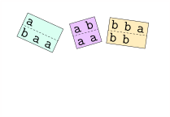
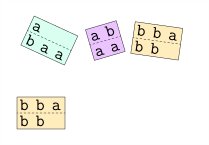
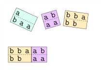
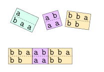
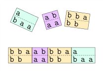
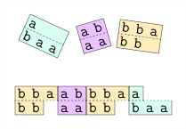
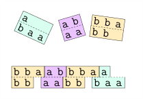
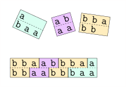
(Diese Beispielinstanz ist von
Wikipedia;
die graphische Darstellung stammt von mir.) Schauen wir uns ein
weiteres, komplizierteres Beispiel an. Hier führen wir eine
Sonderregel ein, nämlich dass man mit der türkisen Kachel (der
ersten) anfangen muss:
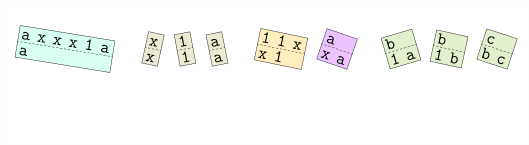
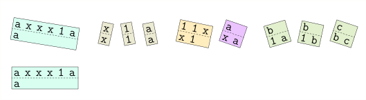
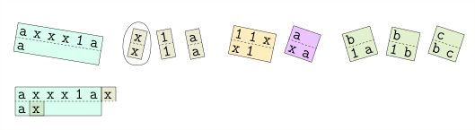
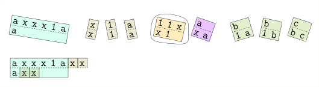
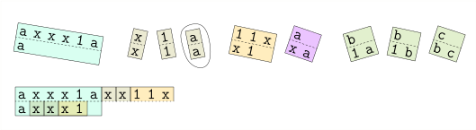
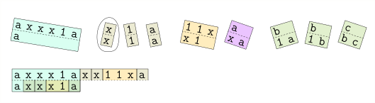
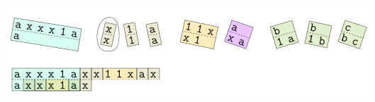
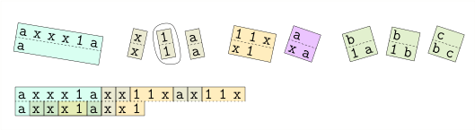
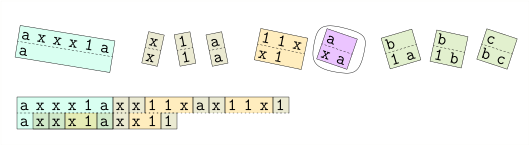
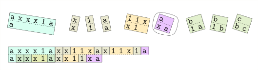
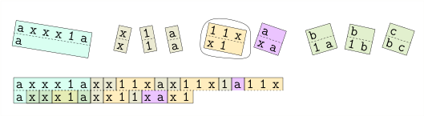
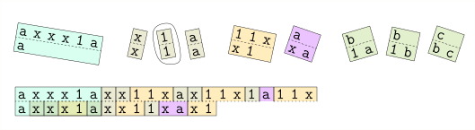
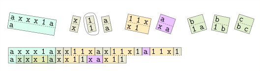
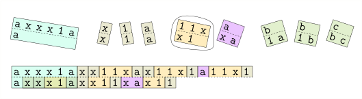
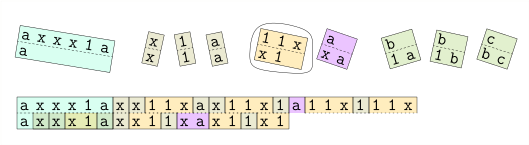
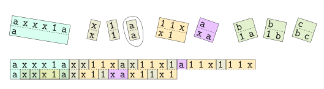
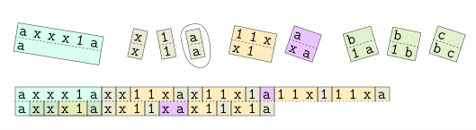
Können Sie das zweie PCP-Puzzle lösen und zu Ende führen?
Informell sehen wir bereits: um das Puzzle zu lösen, müssen wir die
$\texttt{x}$ loswerden. Das geht nur, indem wir jedes $\texttt{x}$
mit Hilfe des fünften (beigefarbenen) Kärtchens nach rechts
schieben, bis es auf ein $\texttt{a}$ stösst, wo wir es mit dem
sechsten (violetten) verschwinden lassen können. Jedes $\texttt{x}$
verdoppelt also die Anzahl der Einsen. Dieses PCP "berechnet" in
gewisser Weise die Funktion
$n \mapsto 2^n$.
In ganz ähnlicher
Weise können wir zu jeder Turingmaschine ein PCP-Puzzle bauen, das
diese Maschine "simuliert". Aber eins nach dem anderen. Wir
beginnen mit Terminologie.
Definition8.7.1
Sei $\Sigma$ ein endliches Alphabet.
Eine
Kachel
(auch
Kärtchen
genannt) ist ein Paar
$(\alpha : \beta) \in \Sigma^* \times \Sigma^*$.
Hier
bezeichnet $\alpha$ das Wort auf der oberen Hälfte der
Kachel und $\beta$ das auf der unteren.
Ein PCP-Puzzle (oder einfach nur Puzzle in diesem
Zusammenhang) ist eine endliche Menge $S$ von Kacheln.
Eine Kachelung ist eine Folge $s$ von Kacheln aus
$S$,
also
Die Kachelung $k_3 k_2 k_3$ ist noch keine Lösung, aber
$k_3 k_2 k_3 k_1$ ist eine. Für ein festes $\Sigma$ können wir
natürlich ein PCP-Puzzle codieren, indem wir die Menge $S$ der
Kacheln codieren, z.B. über dem Alphabet
$\Sigma \cup \{(, :, )\}$.
Das erste Beispielpuzzle $S$ wäre dann
Somit können wir das Postsche Korrespondenzproblem formal als
Sprache definieren:
$$
\begin{align*}
{\rm PCP} := \{ \enc(S) \ | \ S \textnormal{ ist ein PCP-Puzzle und hat eine Lösung} \} \ .
\end{align*}
$$
Theorem8.7.2
PCP ist unentscheidbar.
Beweis.
Wir zeigen: wenn PCP entscheidbar
wäre,
dann
wäre
auch $\halt$ entscheidbar. Da letzteres jedoch unentscheidbar
ist, muss auch PCP unentscheidbar sein. Mehr im Detail: für eine
Turingmaschine $M$ und ein Eingabewort $x$ konstruieren wir ein
Puzzle
$S$,
so dass $S$ genau dann eine Lösung hat, wenn $M(x)$
akzeptiert. Ein Entscheidungsalgorithmus für das PCP könnte somit
auch $\halt$ entscheiden. Wie so oft in ähnlichen Beweisen
machen wir einen Zwischenschritt. Das _Modifizierte Postsche
Korrespondenzproblem (MPCP) _ ist genau das gleiche wie das PCP,
nur dass es in $S$ eine markierte Startkachel gibt und jede
Lösung mit dieser Startkachel beginnen muss. Es ist also ein
"strengeres" Problem als das PCP.
Lemma8.7.3
Gegeben ein MPCP-Puzzle
$S$,
so können wir ein (normales)
PCP-Puzzle $S'$ erstellen, mit der Eigenschaft, dass $S$ eine
Lösung hat genau dann, wenn $S'$ eine Lösung hat.
Beweis.
Im MPCP zwingen uns bereits die Spielregeln, mit der
markierten Startkachel zu beginnen. Wir müssen nun, von $S$
ausgehend, ein ähnliches Puzzle bauen, in welchem es zwar keine
Startkachel gibt, aber dennoch nur eine Kachel überhaupt als
Anfang in Frage kommt. Das geht mit einem Trick, in dem wir
jede Kachel durch eine "gesternte Variante" ersetzen:
wobei * ein neues Symbol ist. Offensichtlich kann keine solche
Kachel ganz links stehen, da ja dann bereits das erste Symbol
nicht übereinstimmen würde. Für die markierte Startkachel
erstellen wir eine weitere "gesternte" Variante:
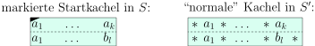
Die gesternten Kacheln zwingen uns nun dazu, mit der
markierten zu beginnen, da diese ja die einzige ist, wo das
erste Symbol oben und unten übereinstimmt. Wir können nun jede
$S'$ -Kachelung in eine
$S$-Kachelung
übersetzen; allerdings
steht bei der
$S$-Kachelung
rechts unten ein *, rechts oben
aber nicht. Wir erstellen nun eine weitere Kachel, die am
rechten Rand und nur dort eingesetzt werden kann:
Sie sehen: die letzte Kachel ist die einzige, die am rechten
Rand stehen kann. Sollte nun das MPCP-Puzzle $S$ eine Lösung
haben (die dann laut Spielregeln auch mit der markierten
Startkachel beginnt), so können wir daraus eine Lösung des
PCP-Puzzles $S'$ konstruieren, indem wir einfach jede $S$
-Kachel durch die entsprechende $S'$ -Kachel ersetzen
(Vorsicht: sollte die markierte Startkachel in der
$S$-Lösung
mehrfach vorkommen, so muss in $S'$ anfangs die "türkise"
Version der Kachel genommen werden, mit * oben und unten; jedes
weitere Exemplar muss dann in $S'$ durch die violette türkise
Kachel ersetzt werden). Ganz zum Schluss hängen wir noch die
Kachel für den rechten Rand an. Sollte umgekehrt das PCP-Puzzle
$S'$ eine Lösung haben, so erhalten wir eine Lösung des MPCP
Puzzles
$S$,
indem wir alle Sterne herausstreichen und die
rechte Endkachel entfernen.A\(\square\)
Nun wissen wir also, dass wir den "Spieler" zwingen können, mit
einer bestimmten Kachel zu beginnen, ohne dies explizit in die
Spielregeln aufnehmen zu müssen. Unser Ziel ist nun: gegeben eine
Turingmaschine $M$ und ein Inputwort
$x$,
darauf aufbauend ein
MPCP-Puzzle $S$ zu konstruieren, das genau dann eine Lösung hat,
wenn $M(x) = \texttt{accept}$ gilt. Erinneren wir uns: eine
Konfiguration
einer Turingmaschine ist eine Folge
mit $w_i \in \Gamma$ und
$q \in Q$.
Die Bedeutung ist, dass auf
dem Band das Wort $w_1 w_2 \dots w_m$ steht, die Turingmaschine
im Zustand $q$ ist und der Schreib-Lese-Kopf über den Zeichen
$w_j$ steht. Wir schreiben also den Zustand unmittelbar
links
von dem Zeichen, über dem er steht. Wenn das Eingabewort
$x_1 \dots x_n$ und $q_0 \in Q$ der Startzustand, dann ist
Zwei aufeinanderfolgende Konfigurationen $C_i, C_{i+1}$
unterscheiden sich nur in der unmittelbaren Umgebung des
Schreib-Lese-Kopfes. Der Rest ist in beiden Konfigurationen
identisch. Die Idee ist nun, zuerst eine Startkachel
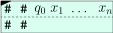
zu bauen. Wir sehen: oben "steht etwas über", und zwar genau die
Startkonfiguration. Wir wollen nun weitere Kacheln entwerfen, die
es dem Spieler erlauben, unten auch die Konfiguration zu legen,
ihn dabei allerdings zwingen, oben die Folgekonfiguration zu
legen. Hierfür brauchen wir "Kopierkacheln", die es uns erlauben,
Zeichen in die Folgekonfiguration zu kopieren und "Kopf-Kacheln",
die die Aktion am Schreib-Lese-Kopf simulieren.
$$
\begin{align*}
\delta(q_0, x_1) = (q_1, y, \texttt{R})
\end{align*}
$$
ist, dann würden wir folgende Kachel erzeugen und wie folgt
einsetzen:
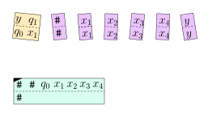
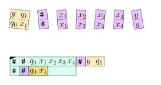
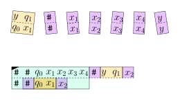
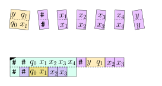
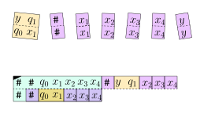
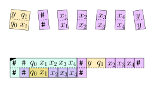
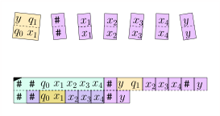
Was geschieht nun? Für das Symbol
$q_1$,
das ja einen Zustand
bezeichnet, gibt es keine Kopierkachel. Wenn nun beispielsweise
gilt, dann müssten wir den Kopf wieder nach links verschieben,
und er würde wiederum ganz am Anfang der Konfiguration stehen. Es
war also ein Fehler, $y$ per Kopierkachel zu kopieren. Wir
machen es rückgängig und legen eine der Regel
$\delta(q_1, x_2) = (q_3, z, \texttt{L})$ entsprechende
Kopfkachel:
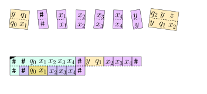
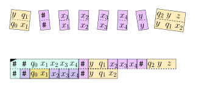
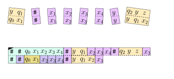
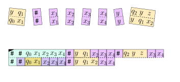
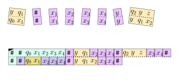
Hier brauchen wir halt eine Kopfkachel $(q_2yz:yq_1x_2)$ für
jedes
Bandsymbol
$y$,
da die Regel immer anzuwenden ist, egal,
welches Symbol $y$ links vom Schreib-Lese-Kopf steht. Fassen wir
zusammen, was wir bis jetzt gesehen haben. Wir konstruieren
Kopierkacheln
$(x:x)$,
die es dem Spieler erlauben, die
Konfiguration zu kopieren; Kopfkacheln, die den Spieler zwingen,
in der Umgebung des Schreib-Lese-Kopfes den Regeln der
Turingmaschine zu folgen; und eine Startkachel, die die
Startkonfiguration abbildet. Also:
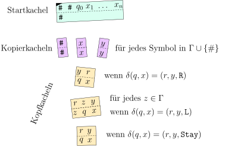
Wir sind noch nicht ganz fertig. Wir brauchen noch Regeln für
den Fall, dass der Schreib-Lese-Kopf am Rand des Bandinhaltes
steht, konkret also die "Umgebung" des Kopfes ein $\texttt{#}$
-Zeichen beinhaltet. Wir können entweder weitere Kopf-Kacheln
entwerfen, die diese Fälle behandeln, oder aber
"Bandwrweiterungskacheln", die uns erlauben, der Konfiguration
$C$ links oder rechts ein Leersymbol $\_$ anzuhängen. Ich
überlasse es an dieser Stelle dem Leser / der Leserin, die
Details hierfür auszuarbeiten. Ganz zum Schluss müssen wir noch
beschreiben, was geschieht, wenn die Maschine in den
akzeptierenden Zustand $q^*$ wechselt. Wir erschaffen Kacheln,
die erlauben, alle Bandsymbole zu löschen, bis das Band leer ist:
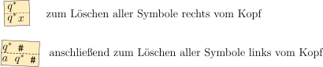
und ganz am Schluss eine Kachel $(\# : q^* \# \#)$ , um alles
abzuschließen. Die letzten zwei Schritte sehen dann so aus:
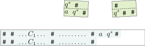
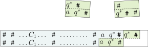
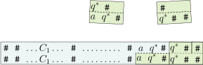
Strenggenommen müssten wir jetzt beweisen, dass das MPCP-Puzzle
genau dann lösbar ist, wenn die Turingmaschine akzeptiert.
Hierfür könnten wir zum Beispiel zeigen, dass, wenn $s$ eine
Kachelung ist, in welcher $\top(s)$ und $\bottom(s)$ beide auf
dem Zeichen $\#$ enden und wenn $\bottom(s)$ nicht das Zeichen
$q^*$ enthält, dann ist
wobei $C_0 = q_0 x_1 \dots x_n$ die Startkonfiguration der
Turingmaschine ist und jedes $C_{i+1}$ die Folgekonfiguration
von
$C_i$;
dass also die Teillösung $s$ des Puzzles getreu die
Berechnung der Turingmaschine abbildet. Wir ersparen uns weitere
Details.A\(\square\)